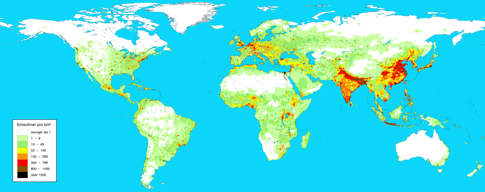

Lebens und Wirtschaftsraum Erde
2. Bevölkerungsverteilung auf der Erde
Derzeit leben 7,7 Milliarden Menschen(Stand 2020) auf der ganzen Welt. Diese sind aber nicht gleichmäßig auf allen Gebieten der Erde verteilt.
Um diese
Bevölkerungsverteilung
besser beschreiben zu können kann die,
Bevölkerungsdichte
errechnet werden.
Dieser Wert gibt an wie viele Menschen die auf bestimmter Fläche leben.
In den ländlichen Gegenden stehen weniger Häuser, darum wohnen hier weniger Menschen. Hier ist der Bevölkerungsdichtewert eher gering. Man spricht von einem
dünn
besiedelten Gebiet.
Das eine Gegend dünn besiedelt ist kann viele verschiedene Gründe haben, meist ist dieses Gebiet dann ein Ungunstraum oder hat davon einige Eigenschaften , wie zum Beispiel das in der Wüste nur sehr wenig Wasser gibt.
Weil in Städten meist viele Personen auf einem kleineren Platz wohnen nennt man dieses Gebiet
dicht
besiedelt. In Tokio der Hauptstadt Japans, leben ca. 9,2 Millionen Menschen. Das alle diese Menschen auch eine Wohnung haben ist vor allem durch Hochhäuser möglich.
